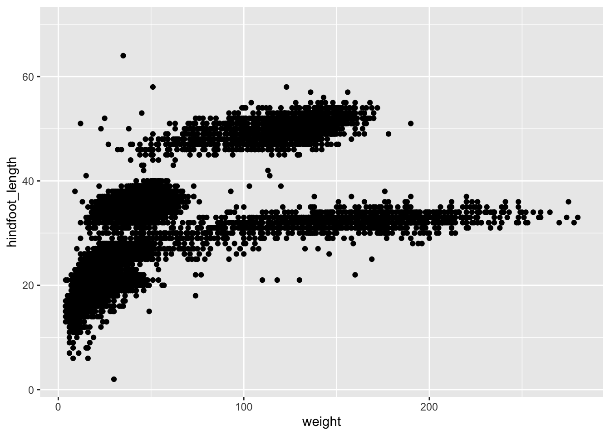
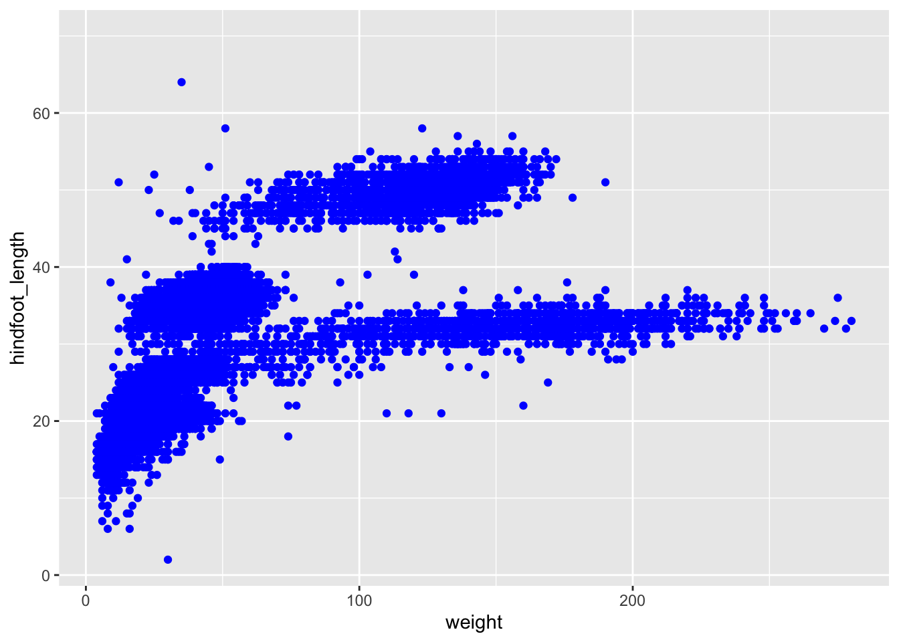

# A collection of R packages designed for data science
library(tidyverse)
surveys <- read_csv("data/surveys.csv")6 Plotting data
Learning objectives
- Learn to create plots
- Be able to build up plots in multiple layers
- Make changes to plot colours and other aesthetics
- Be able to create sub-panels based on data
- Export/save plots to file
6.1 Context
We now have a good grasp of how data is commonly structured, with variables in columns and observations in rows. This is the perfect format for visualising data.
6.2 Section setup
Click to expand
We’ll start this section with a new script named, for example, 04-plotting.R. If needed, add the following code to the top of your script and run it.
We’ll start this section with a new script named, for example, 04-plotting.py. If needed, add the following code to the top of your script and run it.
# A Python data analysis and manipulation tool
import pandas as pd
# Python equivalent of `ggplot2`
from plotnine import *
surveys = pd.read_csv("data/surveys.csv")6.3 Introducing plotting
To create a plot we’ll need three things:
| 1. Data | your data | |
| 2. Mapping aesthetics | variables used to create the visual (e.g. x/y data, colours) | |
| 3. Specify the type of plot | e.g. scatter plot, boxplot, line graph |
This breakdown of plotting is often associated with R’s ggplot2 package, but the underlying principles of the gg (grammar of graphics) is a much more universal approach to creating graphs.
The idea is that you consistently build up plots, layer-by-layer. I like the concept, because it creates consistency in our approach - regardless of the language. There is a Python implementation of ggplot2, called plotnine.
We’ll be using these libraries/modules here, but will also show some examples of other commonly-used plotting packages. You might develop your own preference - this is absolutely fine!
6.3.1 Start plotting
If needed, add and run the code from Section setup.
Here, we are using the surveys data set. Let’s assume that we’re interested in the relationship between two variables: weight and hindfoot_length. We can plot weight on the x-axis and hindfoot_length on the y-axis.
Since they are both continuous data, a scatter plot would be a good way to represent these data.
So, we need three things: (1) data; (2) mapping of aesthetics and (3) specify the type of plot.
We use the ggplot() function to do this:
ggplot(data = surveys,
mapping = aes(x = weight, y = hindfoot_length)) +
geom_point()
We use the ggplot() function to do this. Note that the whole code chunk below is wrapped inside another set of parentheses ( ). This allows us to break up the code a bit for clarity. Also, the variable names that we’re giving to ggplot() are inside quotes " " - this is different from R, where this is not necessary.
(ggplot(data = surveys,
mapping = aes(x = "weight", y = "hindfoot_length")) +
geom_point())Let’s unpack that a bit. We specify which data to use with the data = argument (our surveys data set in this case).
Next, we define what goes onto the x and y axes, using the mapping = argument. This needs a so-called helper function aes(), which stands for aesthetics. Within this helper function we define what goes onto the x-axis (x =) and y-axis (y =).
Finally, we need to tell it what kind of plot we want. Here, we want to use a scatter plot. The type of plot is determined by the geom_. This literally gets added to the ggplot() function: note the + symbol at the end of the line of code.
Most geom_ functions are logically named. For example, a line graph will be geom_line(), a boxplot geom_boxplot() etc. The odd one out is the scatter plot, which is geom_point(), because we’re plotting individual data points.
We don’t have to add any information within the geom_point() function, because it’s taking all it needs from the ggplot() function above. More on this later.
6.3.2 Building up plots
The good thing about ggplot() is that it builds up the plot layer-by-layer. We don’t even have to provide it with a geometry to start with and it’ll still create the outline of a plot.
ggplot(data = surveys,
mapping = aes(x = weight, y = hindfoot_length))
(ggplot(data = surveys,
mapping = aes(x = "weight", y = "hindfoot_length")))However, that obviously is not very useful. The nice thing is that we can add multiple layers to a single plot. Let’s illustrate this with a different example. We have a column sex in the data. This contains three possible values:F (female), M (male) and NA (not recorded).
Let’s look at the hindfoot length distribution across these groups.
ggplot(data = surveys,
mapping = aes(x = sex, y = hindfoot_length)) +
geom_point()
(ggplot(data = surveys,
mapping = aes(x = "sex", y = "hindfoot_length")) +
geom_point())A lot of the points are overlapping, which makes it a bit hard to see how the data are distributed. We can do something about that (more on that in the next session), but we can also add some summary statistics in the form of a boxplot. We can simply add a layer to the plot that displays the boxes.
ggplot(data = surveys,
mapping = aes(x = sex, y = hindfoot_length)) +
geom_point() +
geom_boxplot()
(ggplot(data = surveys,
mapping = aes(x = "sex", y = "hindfoot_length")) +
geom_point() +
geom_boxplot())The layers are added in the order we provide them, so here the boxes are on top of the individual data points. You might want to rearrange that, so that the boxes are behind the data.
6.4 Changing plots
Often we want to control other parts of the plot as well. There is a whole range of things we can change about the appearance of a plot - in fact, anything in a plot can be changed! Don’t try to remember every tiny detail. You might want to change the orientation of the text labels on the x-axis, but a quick search is probably easier than keeping that information in your head!
6.4.1 Colour
Changing colour is pretty straightforward. We use the colour = argument. There are a whole range of default colours available, but we’ll go with blue here.
Let’s illustrate that using our original weight vs hindfoot_length scatter plot.
ggplot(data = surveys,
mapping = aes(x = weight, y = hindfoot_length)) +
geom_point(colour = "blue")
(ggplot(data = surveys,
mapping = aes(x = "weight", y = "hindfoot_length")) +
geom_point(colour = "blue"))6.4.2 Fill
The fill = argument is used to fill surface areas. It doesn’t work on individual points, but instead on geometries that have an area, such as a boxplot, bar chart or violin plot.
We can’t create a boxplot with two continuous variables, so we’ll plot hindfoot_length for the different sex groups again. We fill the boxes using magenta.
What happens if you use colour = "magenta" instead?
ggplot(data = surveys,
mapping = aes(x = sex, y = hindfoot_length)) +
geom_boxplot(fill = "magenta")
(ggplot(data = surveys,
mapping = aes(x = "sex", y = "hindfoot_length")) +
geom_boxplot(fill = "magenta"))6.4.3 Aesthetics based on data
Manually assigning colours can be very helpful, but quite often we want to colour data based on another variable. For example, we might be interested in the potential relationship between weight and hindfoot length, but are wondering if this looks different across the sex groups.
In that case, we’d want to colour all the data points belonging to the male group different to those of the female group. The same goes for the missing values.
The way we can do this is by adding the sex variable inside the aesthetics.
Within
aes() or not?
An easy way of remembering where your colour = or fill = argument goes is to ask: is the colour based on the data or not? If the answer is yes, it goes inside the aesthetics. If not, then outside.
ggplot(data = surveys,
mapping = aes(x = weight, y = hindfoot_length, colour = sex)) +
geom_point()(ggplot(data = surveys,
mapping = aes(x = "weight", y = "hindfoot_length", colour = "sex")) +
geom_point())6.4.4 Dealing with overlap
In the example of hindfoot length for the different sex groups we noticed that there is quite a bit of overlap in the data. One of the ways of dealing with this is by adding a little bit of jitter. What that does is add a tiny bit of random noise to the data, to avoid overlap.
We can do this with the geom_jitter() geometry. The amount of jitter that is added can be regulated with the width = argument, as a fraction of the available width. Compare the differences in the following plots.
ggplot(data = surveys,
mapping = aes(x = sex, y = hindfoot_length)) +
geom_jitter()ggplot(data = surveys,
mapping = aes(x = sex, y = hindfoot_length)) +
geom_jitter(width = 0.1)(ggplot(data = surveys,
mapping = aes(x = "sex", y = "hindfoot_length")) +
geom_jitter())(ggplot(data = surveys,
mapping = aes(x = "sex", y = "hindfoot_length")) +
geom_jitter(width = 0.1))6.4.5 Transparency
Even with jittering the data, we still have quite some overlap. There probably is a limit to what we can do about it, but adding some transparency can also help. Here, where there is more overlap, areas will appear darker whereas less overlap will appear lighter.
We control this with the alpha = argument. Again, this takes a value between 0 (full transparency) and 1 (no transparency).
Compare the following plot with the previous ones.
ggplot(data = surveys,
mapping = aes(x = sex, y = hindfoot_length)) +
geom_jitter(width = 0.1, alpha = 0.4)(ggplot(data = surveys,
mapping = aes(x = "sex", y = "hindfoot_length")) +
geom_jitter(width = 0.1, alpha = 0.4))6.4.6 Point size and line width
The size = argument is used to control the size of points, whereas the linewidth = argument is used to specify line thickness. Look at the following examples.
In the next two panels we’re using geom_point() with different sizes.
The following two panels use a different geometry: geom_smooth(). This creates a smoothed line across the data. The width of the line can be changed with the linewidth = argument.
6.5 Facets
Plots can split into multiple panels using facetting. This is a very useful tool to quickly see data distributions across different groups. We can split them into two types:
facet_wrap()arranges a one-dimensional sequence of panels (based on a single splitting variable) to fit on one pagefacet_grid()allows you to form a matrix of rows and columns of panels (based on two different variables)
This is best illustrated with an example. Let’s say we want to split the weight vs hindfoot length scatter plot by the different sex groups, where the data belonging to each group has its own sub-panel. We can do this as follows.
ggplot(data = surveys,
mapping = aes(x = weight, y = hindfoot_length)) +
geom_point() +
facet_wrap(facets = vars(sex))
Note the added code:
facet_wrap(facets = vars(sex))We used facet_wrap(), because we’re only splitting the data by a single variable: sex. We also need to tell the function which variable to split by, which we do in the facets = argument. Annoyingly - and for reasons unbeknownst to me - this requires the use of a helper function, vars().
(ggplot(surveys, aes(x = "weight", y = "hindfoot_length")) +
geom_point() +
facet_wrap("~ sex"))Note the added code:
facet_wrap("~ sex")We used facet_wrap(), because we’re only splitting the data by a single variable: sex. We also need to tell the function which variable to split by, which we do by using the ~ symbol. I completely agree that this is a weird notation. Just read it as split by…
In the end, our data is split into three sub-panels - one for each group. This makes it easy to see trends across the groups. Or, in this case, that there doesn’t seem to be much difference in the distribution across the female and male observations.
6.6 Saving plots
Sometimes you might want to save a plot you created. This is pretty straightforward. Here, we are assuming that you have an images subfolder in your working directory.
We save a plot in two steps:
- Assign the plot to an object
- Then use
ggsave()to save this object
plot_r <- ggplot(data = surveys,
mapping = aes(x = weight, y = hindfoot_length)) +
geom_point() +
facet_wrap(facets = vars(sex))ggsave(filename = "images/height_vs_hindfootlength.png",
plot = plot_r,
width = 7,
height = 5,
units = "in")plot_python = (ggplot(surveys, aes(x = "weight", y = "hindfoot_length")) +
geom_point() +
facet_wrap("~ sex"))(ggsave(plot_python,
filename = "images/height_vs_hindfootlength.png",
units = "in",
width = 7,
height = 5))Here, I’ve added a few extra arguments to demonstrate what you can change. The only two things that are required are (1) the plot you want to save and (2) the name of the plot, including the filename extension.
The other arguments, such as units =, width = and height = are used to define the units size (inches in this case) and corresponding width/height values.
6.7 Summary
Key points
- We can build up plots layer-by-layer, adding multiple geometries in a single plot
- Plot aesthetics can be changed based on data or manually defined
- Colour, fill, transparency and jittering can all be useful ways to improve clarity
- Plots can be subdivided into panels, called facets, which are based on a variable within the data. This allows easy visual comparison across groups.
- We use functions like
ggsave()to export plots to file